Retos ambientales y sociales
Resultados de aprendizaje y criterios de evaluacion que se evaluarán en esta unidad.
| Resultados de aprendizaje de la unidad didáctica: |
|---|
| RA. 2: Caracteriza los retos ambientales y sociales a los que se enfrenta la sociedad, describiendo los impactos sobre las personas y los sectores productivos y proponiendo acciones para minimizarlos. |
| Criterios de evaluación de la unidad didáctica: |
|---|
| a) Se han identificado los principales retos ambientales y sociales. |
| b) Se han relacionado los retos ambientales y sociales con el desarrollo de la actividad económica. |
1 - Retos ambientales y sociales en el Desarrollo Sostenible
- La sociedad contemporánea se enfrenta a una crisis sistémica donde los desafíos ambientales y sociales están intrínsecamente interconectados de forma bidireccional.
- El deterioro de los ecosistemas mina el desarrollo socioeconómico, mientras que la desigualdad y los modelos insostenibles de producción y consumo aceleran la degradación ambiental.
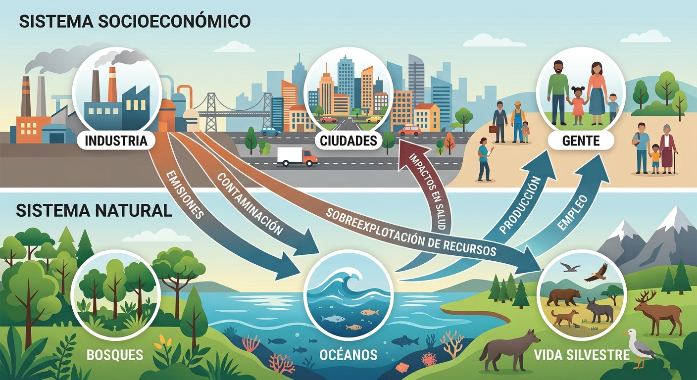
🌎 Desafíos ambientales principales
1. Cambio climático y transición energética
- Aumento de las temperaturas globales provocado por la emisión de Gases de Efecto Invernadero (GEI) procedentes de combustibles fósiles.
- Provoca un incremento en la frecuencia e intensidad de fenómenos meteorológicos extremos (olas de calor, sequías prolongadas, precipitaciones torrenciales y DANA), el aumento del nivel del mar y la alteración de los patrones climáticos.
2. Pérdida de biodiversidad y colapso de ecosistemas
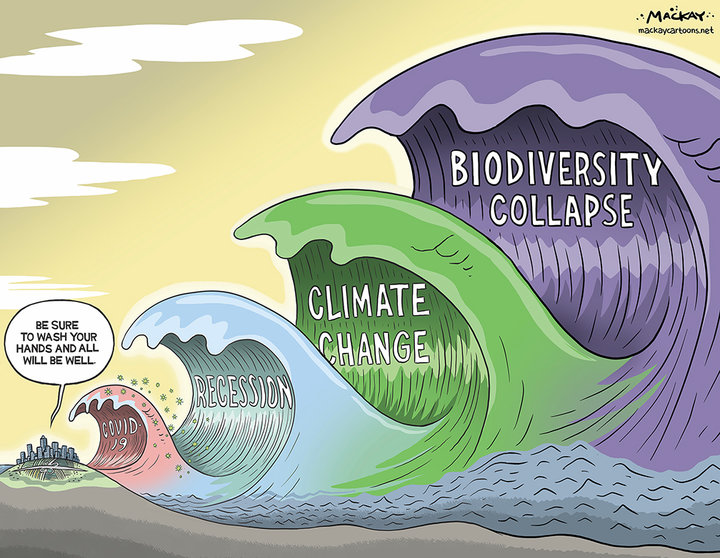
- Extinción acelerada de especies y destrucción de hábitats clave (bosques, humedales, arrecifes) por sobreexplotación, deforestación y contaminación, reduciendo la resiliencia de la naturaleza y los servicios ecosistémicos.
3. Contaminación y gestión ineficiente de residuos
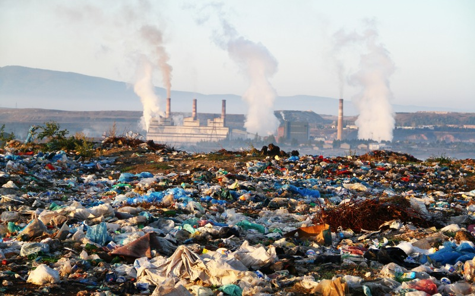
-Presencia masiva de plásticos, microplásticos, vertidos químicos e industriales y emisiones contaminantes en el aire, agua y suelo.
4. Escasez hídrica y estrés de agua dulce
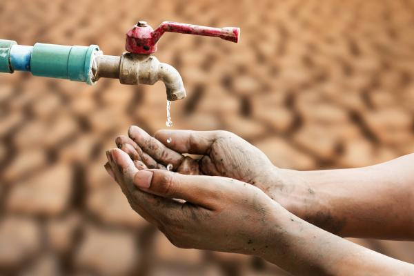
- Desequilibrio creciente entre la demanda humana/productiva y la disponibilidad real de agua dulce, agravado por el cambio climático y la contaminación de acuíferos.
5. Degradación del suelo y desertificación
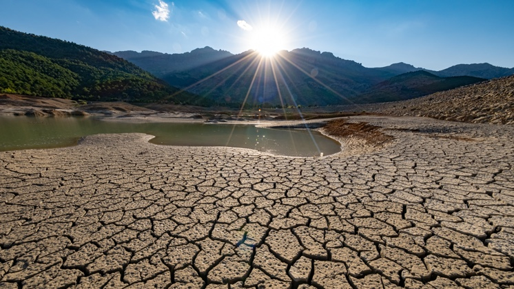
- Pérdida de la fertilidad de la tierra, erosión y salinización debido a la agricultura intensiva, la deforestación y el aumento del estrés térmico.
👥 Desafíos Sociales Principales
1. Pobreza, desigualdad y brecha climática
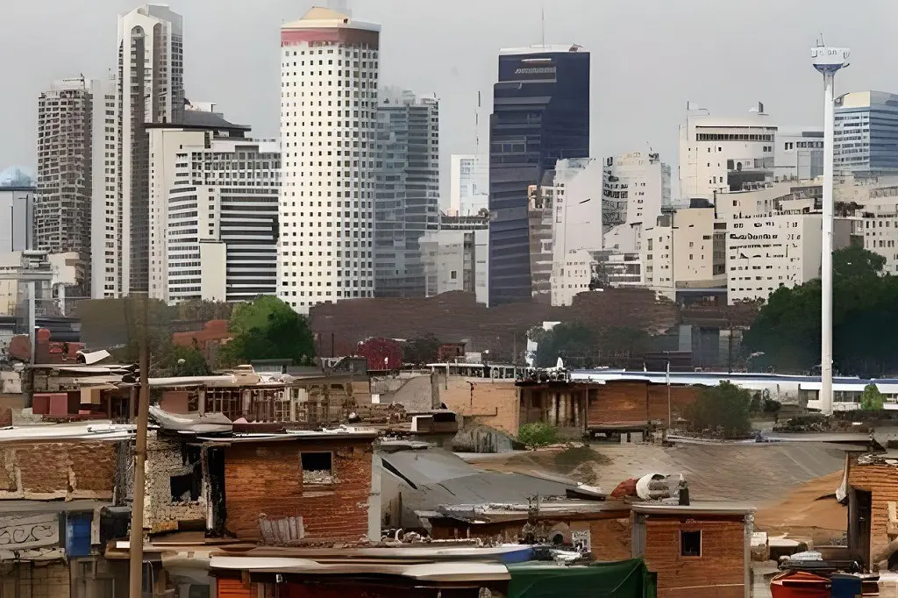
- Gran disparidad socioeconómica en el acceso a recursos y oportunidades.
- La exposición a los riesgos ambientales es inequitativa: las poblaciones con menor nivel de renta sufren los mayores daños a pesar de haber contribuido sustancialmente menos a las emisiones globales.
2. Acceso limitado a servicios básicos e inseguridad alimentaria
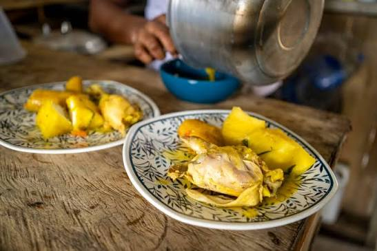
- Dificultades para garantizar agua potable, saneamiento digno, energía asequible y alimentos nutritivos debido a caídas en la producción agropecuaria y sequías.
3. Desplazamientos y migraciones climáticas
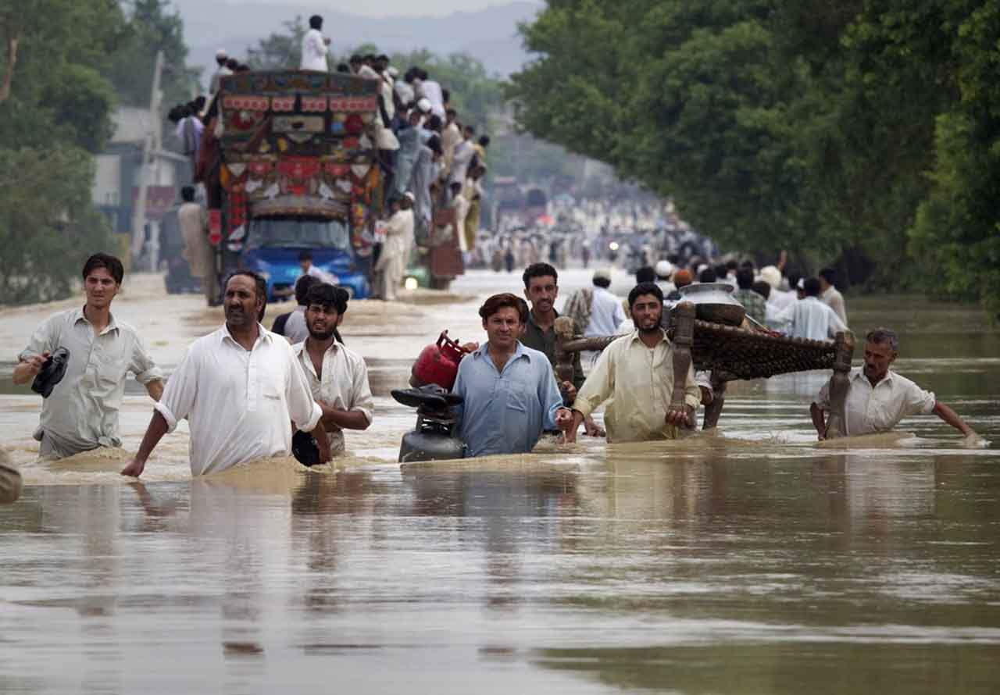
- Éxodo rural y migraciones forzosas internas e internacionales provocadas por la pérdida de medios de vida, desertificación, inundaciones o escasez extrema de agua.
4. Reto demográfico y vulnerabilidad territorial
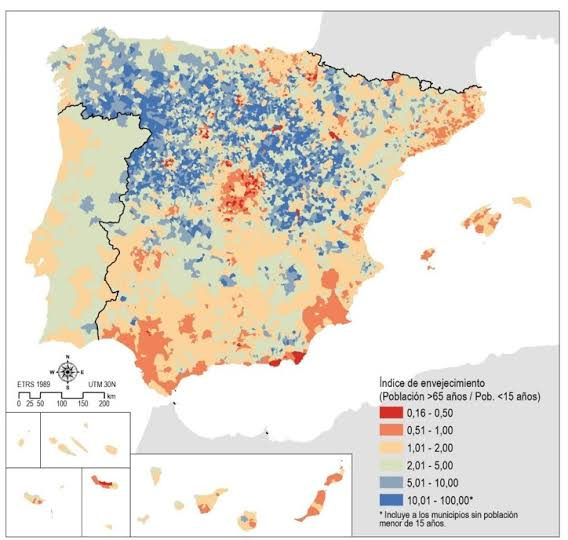
- Concentración poblacional en grandes áreas urbanas y zonas costeras, dejando entornos rurales envejecidos y desatendidos ante catástrofes naturales
2. Impactos sobre las personas (eje social)

Los impactos ambientales y de la transición afectan de manera directa e inmediata a la salud, la economía doméstica, la equidad de género y los medios de vida de la ciudadaníar.
| Dimensión de impacto | Manifestaciones clave y evidencia |
|---|---|
| Salud Pública | - Mortalidad por calor extremo: Incremento de muertes directas por olas de calor (alcanzando 116 fallecidos por millón en España, muy por encima de la media europea). - Afecciones respiratorias y cardiovasculares: Agravadas por la concentración de ozono troposférico y partículas finas. - Enfermedades infecciosas y gastrointestinales: Expansión de vectores (dengue, malaria) y patógenos en el agua por mala calidad o sequía. |
| Economía Doméstica | - Pobreza Energética: Incapacidad de mantener una temperatura adecuada en el hogar en invierno o verano debido al bajo aislamiento edilicio y la volatilidad tarifaria. - Encarecimiento de la Cesta de la Compra: Aumento sostenido de precios en alimentos frescos e insumos básicos por caídas de cosechas. - Gastos Extraordinarios: Coste adicional directo por la compra de agua embotellada o camiones cisterna en municipios con escasez. |
| Injusticia y Desigualdad | - Afectación desproporcionada: Niños, ancianos, personas con discapacidades, hogares monomarentales y migrantes son los más vulnerables. - Desigualdad de Emisiones: Mientras el 70% de la población habita en municipios donde la temperatura subió más de 1,5 °C (con rentas familiares bajo la media), las grandes fortunas y corporaciones registran huellas de carbono drásticamente superiores. |
| Empleo y Trabajo | - Pérdida de Puestos Directos: Extinción de empleo en agricultura tradicional y sectores dependientes de recursos amenazados. - Riesgos Laborales Térmicos: Mayor exposición a golpe de calor en trabajos al aire libre (construcción, agricultura). |
3. Impactos sobre los sectores productivos (eje económico)
Las actividades económicas enfrentan riesgos físicos (daños directos por el clima) y riesgos de transición (costes de adaptación normativa, penalizaciones al carbono y cambios de demanda).
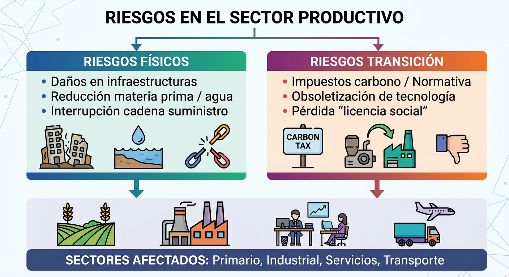
🌽 Sector primario (agricultura, ganadería y pesca)
1. Agricultura
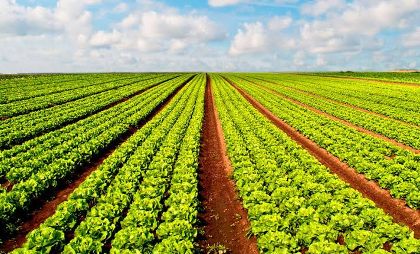
- Reducción drástica del potencial productivo y pérdida de cosechas por sequías y lluvias torrenciales (p. ej., pérdidas anuales estimadas en 1.500 millones de euros en España por escasez hídrica y caídas de más del 20% de ingresos en explotaciones locales). Pérdida de suelos por erosión y salinización de acuíferos
2. Ganadería
- Estrés térmico animal que reduce la productividad de leche y carne, aumentando la morbilidad y los costes operativos por la escasez de pastos y mayor gasto en refrigeración o piensos.
3. Pesca y acuicultura
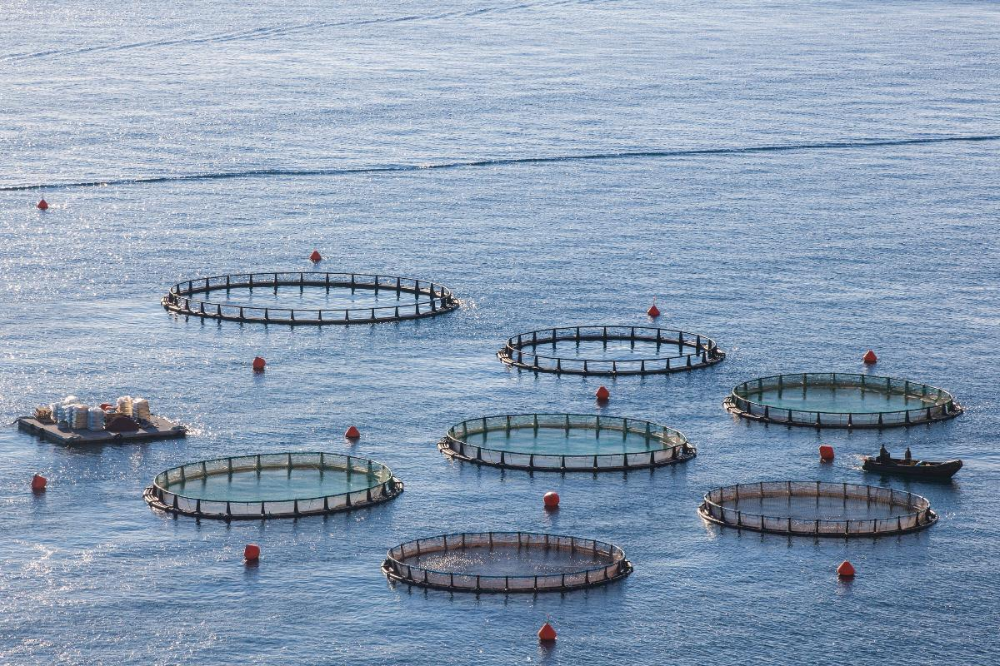
- Desplazamiento y reducción de caladeros por el aumento de la temperatura del mar, la acidificación oceánica y la pérdida de biodiversidad
🏭 Sector industrial y energético
1. Industria manufacturera y agroalimentaria
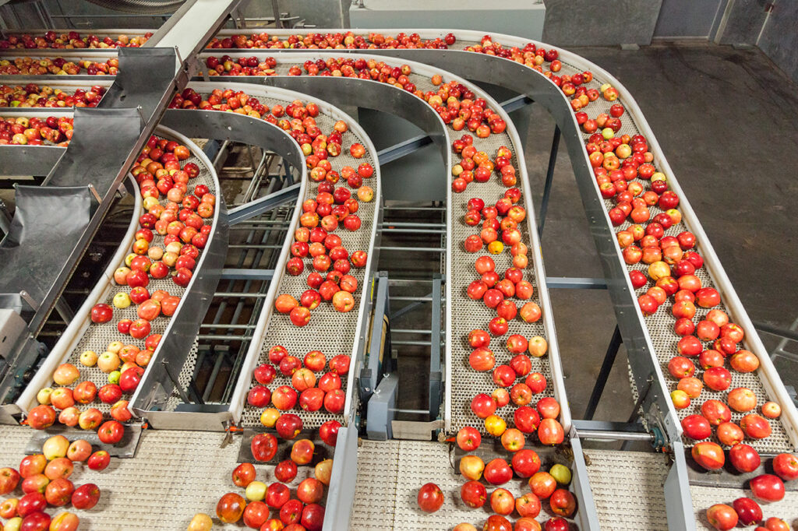
- Interrupción de cadenas de suministro por eventos meteorológicos y sobrecostes por restricción de insumos clave como el agua (especialmente intensivo en minería, textil, bebidas y procesado de alimentos).
- Necesidad de asumir inversiones de descarbonización e impuestos al carbono para mantener la competitividad.
2. Sector energético
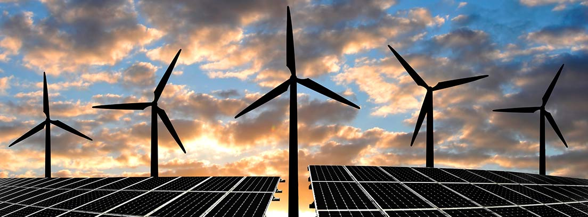
- La menor disponibilidad de agua compromete la generación hidroeléctrica, la producción de biomasa y los sistemas de refrigeración de plantas no renovables.
- A su vez, el cambio en los patrones térmicos altera la demanda energética provocando picos de consumo en verano.
🏙️ Sector servicios, turismo, transporte y finanzas
1. Turismo
- Deterioro de atractivos naturales (blanqueamiento de corales, erosión de playas, falta de nieve en estaciones de esquí), sobrecalentamiento estival en zonas del sur y alteración de las temporadas de afluencia
2. Transporte y logística
- Daños en infraestructuras viales y ferroviarias por eventos extremos y retrasos logísticos por sequías en vías fluviales.
- Desafío de renovar flotas hacia vehículos de cero emisiones ante el diferencial de precios de los combustibles limpios.
3. Sector financiero y seguros
- Aumento del riesgo de impago en carteras crediticias expuestas al clima y fuerte elevación de las primas e indemnizaciones por siniestros y catástrofes naturales.
4. Acciones y respuestas para minimizar los impactos
Para frenar la degradación y construir resiliencia, las respuestas abarcan iniciativas ambiental-tecnológicas, transformaciones productivas y políticas de protección social.
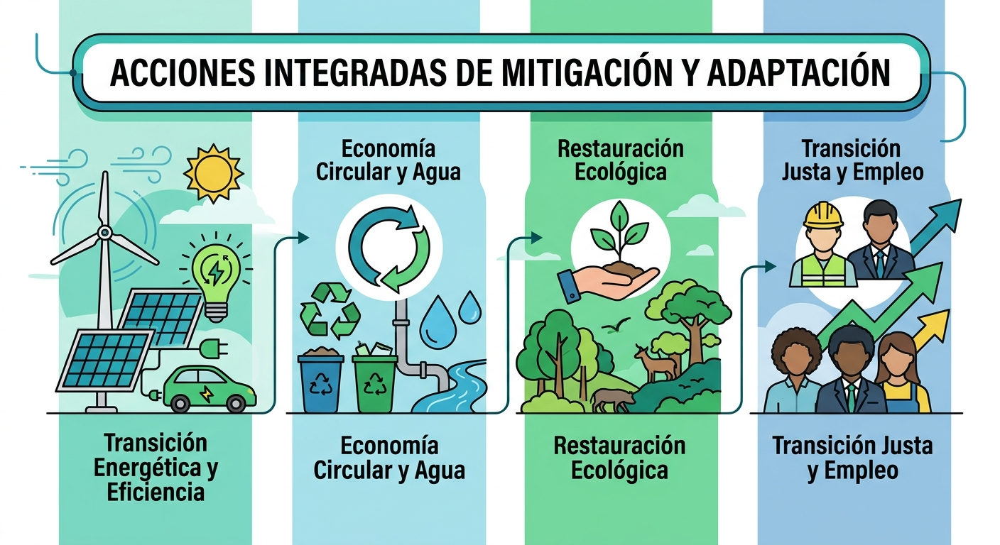
🌎 Medidas ambientales y de eficiencia productiva
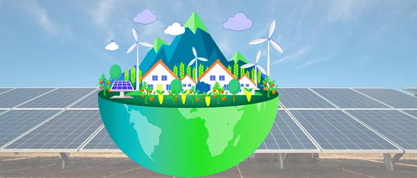
Mitigación climática y transición energética
- Descarbonización del Mix: Sustitución gradual de combustibles fósiles por energías renovables (fotovoltaica, eólica, geotérmica) y despliegue de almacenamiento energético.
- Eficiencia y Rehabilitación: Planes masivos de optimización térmica en viviendas e instalaciones industriales (sistemas LED, aislamiento, climatización de alto rendimiento).
- Movilidad Sostenible: Electrificación del transporte, potenciación del transporte público y fomento de biocombustibles avanzados en aviación y transporte pesado.
- Fiscalidad Ambiental: Aplicación de precios al carbono y revisión de subsidios para internalizar costes ambientales.
Gestión de recursos y economía circular
- Estrategia R (Reducir, Reutilizar, Reparar, Reciclar): Implantación de diseño modular, ecodiseño para alargar la vida útil del producto, eliminación de plásticos de un solo uso y valorización de residuos.
- Simbiosis Industrial: Configuración de redes donde los subproductos o residuos de una empresa actúan como materia prima de otra.
- Ciclo Eficiente del Agua: Modernización de regadíos (riego por goteo inteligente), tratamiento y reutilización de aguas grises/residuales y detección digital de fugas en redes.
Restauración ecológica y agroecología
- Soluciones Basadas en la Naturaleza: Reforestación con especies autóctonas, restauración de humedales y ríos, y creación de infraestructura verde urbana para mitigar islas de calor.
- Agricultura de Conservación: Rotación de cultivos, reducción de fertilizantes sintéticos y pesticidas, y manejo de suelos vivos para retener agua y capturar carbono.
👥 Medidas sociales, laborales y de transición justa
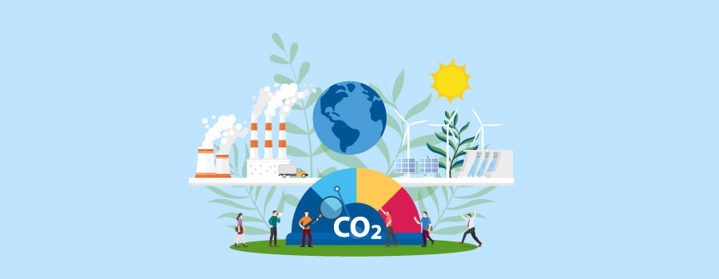
Políticas activas de empleo (PAE) y competencias verdes
- Recualificación (Reskilling) y Capacitación (Upskilling): Programas de formación continua para adaptar la mano de obra de sectores en declive ("empleos marrones") hacia actividades sostenibles ("empleos verdes") como la rehabilitación energética, la gestión de residuos o el montaje de renovables.
- Fomento del Empleo Joven y de Género: Incentivos mediante convocatorias específicas (como el programa Empleoverde+) y fomento de titulaciones STEM e insumos sostenibles entre colectivos infrarepresentados.
Estrategia de transición justa
- Convenios de Transición Justa: Planes de reconversión territorial para comarcas afectadas por el cierre de minas o centrales térmicas, incluyendo bolsas de trabajo prioritarias, prejubilaciones y proyectos de restauración ambiental.
- Protección Social y Redistribución: Mecanismos de compensación para familias en situación de pobreza energética, bonos sociales y subsidios directos a la rehabilitación de vivienda en barrios de baja renta.
Diálogo social y marco laboral
- Negociación Colectiva Verde: Inclusión de cláusulas ambientales y de adaptación climática en convenios colectivos, impulsadas por acuerdos marco entre patronal y sindicatos.
- Mecanismos de Flexibilidad e Higiene Laboral: Integración de protocolos específicos en la Prevención de Riesgos Laborales frente a fenómenos extremos (olas de calor) y uso de sistemas de flexibilidad interna (como los ERTE o Mecanismo RED) para salvaguardar el empleo en crisis climáticas.
5 - Foro de discusión
¿Debería aplicarse una fiscalidad ambiental más severa a las grandes corporaciones y rentas altas para financiar la adaptación climática de los hogares vulnerables?
- Argumentos a favor.
- Argumentos en contra.
En periodos de sequía severa, ¿se debe priorizar el corte/restricción del agua al sector agrícola e industrial o mantener el suministro para evitar recesiones y desabastecimiento?
- Argumentos a favor.
- Argumentos en contra.
¿Es éticamente aceptable acelerar el cierre de industrias contaminantes ("empleos marrones") aun a costa de generar desempleo a corto plazo en comarcas dependientes de ellas?
- Argumentos a favor.
- Argumentos en contra.
¿Deben imponerse límites obligatorios al turismo de masas en épocas estivales para proteger la capacidad hídrica y ambiental de los municipios?"
- Argumentos a favor.
- Argumentos en contra.
¿Debe el Estado financiar al 100% la rehabilitación térmica de las viviendas de bajos ingresos o debe dejarse a la iniciativa e inversión privada?
- Argumentos a favor.
- Argumentos en contra.